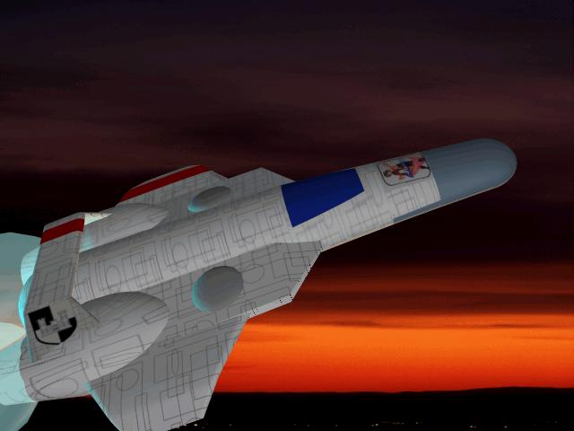
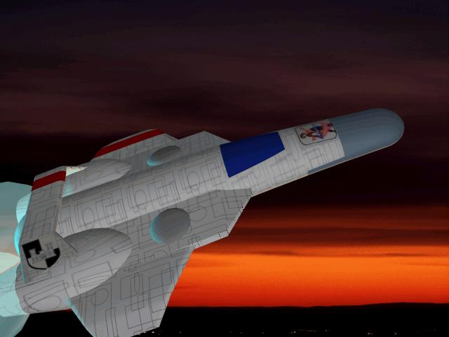

BARD PAPER: SARA9003
BARD PAPER: SARA9003 | Home | Traveller | BARD | SARA |
Artemis Class Armed Exploration Scout
design by Derek Stanley

BARD PAPER: SARA9003 | Home | Traveller | BARD | SARA |
design by Derek Stanley

Extremely popular with the Confederation of Nightrim Exploration service there are currently only three examples of the Artemis Class Armed Exploration Scout in service. The CNV Artemisia, Diana and Ishtar have proven to be so capable that eight more of this type of vessel are planned. Perhaps the ships greatest draw back is its lack of cargo area, with slightly better than fifty cubic meters of storage space, crews are often forced to utilize hallways, crawl-spaces and common areas to store cargo if the hold is being used to store an Air Raft. Often the Air-Raft is simply used as yet another closet on an already tight design.
What this means is it is often next to impossible to perform any routine maintenance on the ship while it is overloaded in space. If the ship is carrying more than double its allotted cargo 106 cubic meters plus all engineering tasks become more awkward. Increase difficulty by one level and double all maintenance times. Impossible Acrobatics drops Engineering Difficulty by one level.
Artemis Class Armed Scout
| Displacement: 120 tons | Hull Armor: 42 |
| Volume: 1680m3 | |
| Price: 139.1 MCr | Target Size: S |
| Configuration: Needle AF | Tech Level: 12/13 |
| Mass (Loaded/Unloaded): 1717.5/1613.7 | |
Short Medium Long Ext. ---------------------------------------------------------------------------------------------------------- 150-Mj Laser Turret 1:1/10-30 2:1/10-30 4:1/10-30 8:1/10-30
Damage Tables
Area: 1D20 Surface Hits: Internal Explosions: Systems:
1 1-5: Ant Hold JD-2H AG-1H
2-3 Elec PP-3H FPP-2H
4-5 1-2: S. Cargo Hatch, 1-12: Mbay LS-(3h) SSR-(2h)
3-6: Launch Port ELS-1H MFD-(2h)
6-7 Hold MD-1H LSR-1H
8 Hold CG-1H Mbay-1H
9 1-10: L. Cargo Hatch Hold All Others-(1h)
10 1: AL, 2-19: Ant Qtrs.
11 1: AL 1-10: Turret, 11-20: Hold
12-13 1-10: Turret, 11-20: Hold
14 1-5 Qtrs, 6-20: Hold
15 Hold
16-17 Ant 1-10: Qrts, 15-20 Hold
18-19 1-3 EMMR Engineering
20 Engineering
Notes
Fuel purification machinery (0.9825 MW), 25.5 hours to refine 674 m3 Power short fall of 9.767 MW. Craft is only capable of 3G with Contra-Grav engaged. 10 Crew members get 10 bunks with only the commander living in the ships one small stateroom. Each Crew member is allocated 2.5 m3 of personal storage space. Technically Speaking the ship requires two electronic� officers, however since two of the sensor systems are not combat useful I�'ve cut the number of electronic officers down to one, the commander or Missile gunner can operate the others if desired.